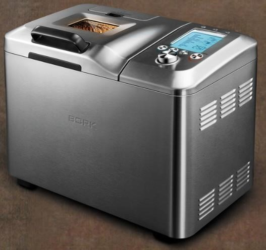
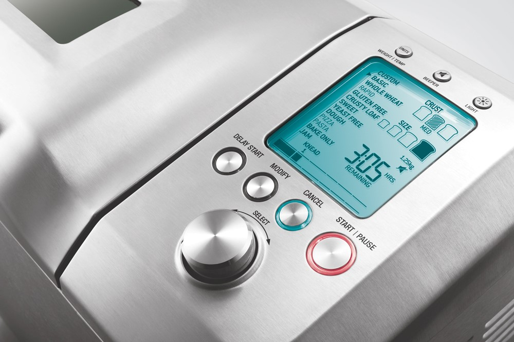
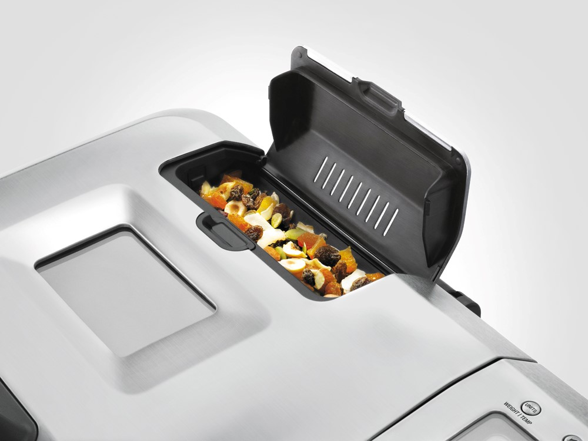
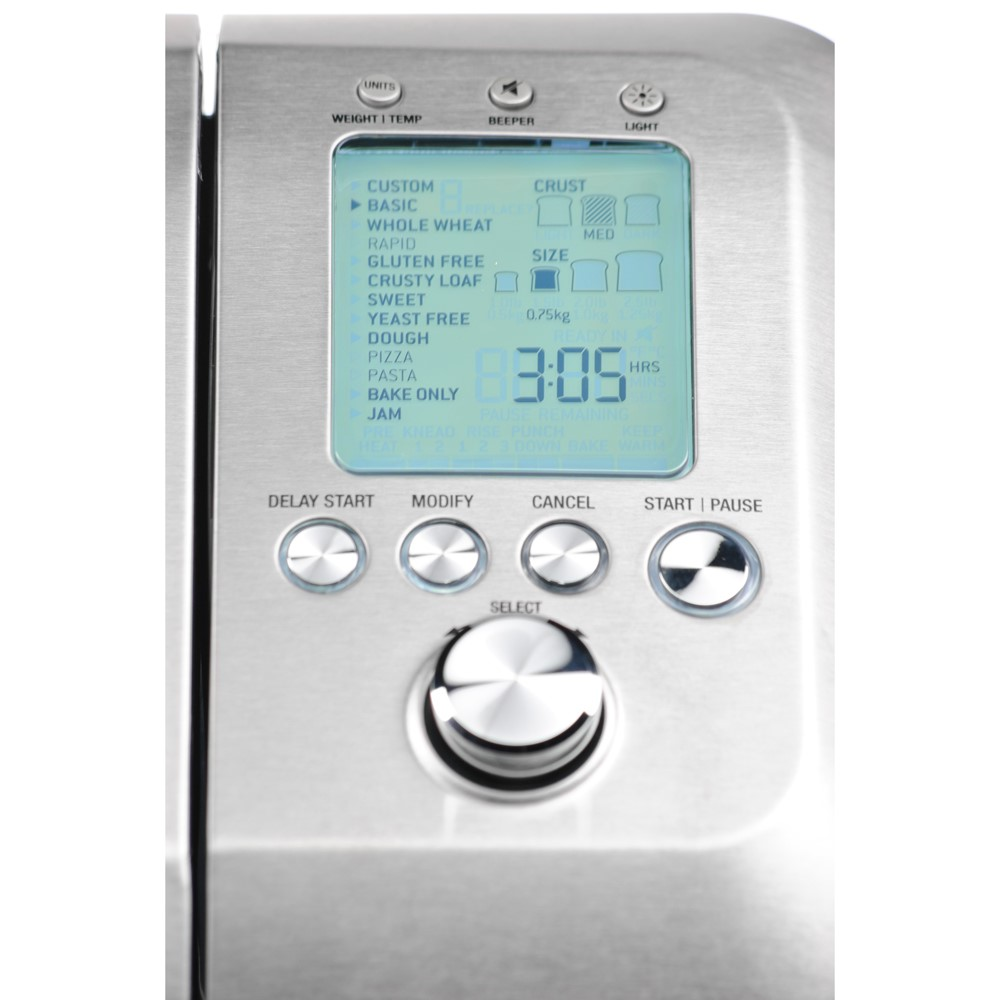

Хлебопечь X800
Особенности
- 14 автоматических режимов, 9 программируемых режимов
- 4 размера готовой выпечки
- Функция отложенного старта
- Диспенсер для автоматического добавления ингредиентов
- Универсальная складная лопасть
Устройство

Кнопка конвертации единиц измерения веса и температуры—WEIGHT | TEMP
• Нажмите кнопку для конвертации граммов в фунты и градусов Цельсия (°С) в градусы Фаренгейта (°F).
Кнопка включения / выключения звукового сигнала—BEEPER
Кнопка включения / выключения освещения—LIGHT
• Нажмите и удерживайте кнопку, чтобы включить внутреннее освещение камеры.
Кнопка функции отложенного старта— DELAY START
• Нажмите кнопку, чтобы установить время, через которое хлеб должен быть готов.
Кнопка изменения параметров приготовления—MODIFY
Кнопка отменыприготовления —CANCEL
• Нажмите кнопку для возврата в главное меню перед началом цикла.
• Нажмите и удерживайте кнопку для отмены приготовления.
Кнопка начала / прерывания приготовления—START | PAUSE
• Нажмите кнопку START | PAUSE для начала приготовления.
• Нажмите и удерживайте кнопку START | PAUSE для прерывания приготовления. При повторном нажатии процесс приготовления возобновится.
Функцию паузы нельзя выбрать во время режима подогрева—KEEP WARM.
Регулятор выбора—SELECT (выбор программ, цвета корочки, веса, времени)
• Вращайте регулятор для выбора настроек и нажмите для подтверждения выбора.
4 размера готовой выпечки
Вы можете выбрать 1 из 4 вариантов веса буханки хлеба: 500, 750, 1000 или 1250 г.
3 варианта цвета корочки
- LIGHT—светлый
- MED—средний
- DARK—темный
Отсчёт времени на Дисплее
Функция подогрева Keep worm – прямой отсчёт времени. Функция отложенного старта Delay start – обратный отсчёт времени.
Шкала этапов приготовления
Отображает время работы на каждом из этапов.
- PREHEAT—предварительный нагрев
- KNEAD—замес
- RISE—подъем
- PUNCH DOWN—обминка
- BAKE—выпекание
- KEEP WARM—подогрев READY IN—индикация работы функции отложенного старта. REMAINING—индикация отсчета времени.
2 вида лопастей для замешивания
В комплекте с хлебопечью поставляются 2 лопасти для замешивания.
Универсальная складная лопасть
Используется во всех режимах для приготовления хлеба и теста. Перед стадией выпекания переводится в горизонтальное положение, чтобы свести к минимуму размер отверстия в основании буханки. В конце приготовления лопасть не требуется извлекать из хлеба.
Лопасть для джема
Идеально подходит для приготовления джема и варенья, так как позволяет непрерывно перемешивать ингредиенты.
Диспенсер для автоматического добавления ингредиентов
Позволяет добавлять в хлеб дополнительные ингредиенты в нужное время. Засыпьте в диспенсер орехи, зерна, кусочки фруктов или шоколадную крошку и создайте собственный кулинарный шедевр.
14 автоматических режимов
- CUSTOM—программируемый режим
- BASIC—основной режим
- BASIC RAPID—основной ускоренный режим
- WHOLE WHEAT—пшеничный цельнозерновой хлеб
- WHOLE WHEAT RAPID—пшеничный цельнозерновой хлеб, ускоренный режим
- GLUTEN FREE—хлеб без клейковины
- CRUSTY LOAF—хрустящая булочка
- SWEET—сладкая выпечка
- YEAST FREE—бездрожжевой хлеб
- DOUGH—тесто
- DOUGH PIZZA—тесто для пиццы
- DOUGH PASTA—тесто для пасты
- BAKE ONLY—только выпечка
- JAM—джем
Функция изменения параметров приготовления — MODIFY
Эта функция позволяет менять параметры приготовления в автоматических режимах. Возможно изменить настройки температуры и времени приготовления на этапах PREHEAT (предварительный нагрев), KNEAD (замешивание теста), RISE (подъем), PUNCH DOWN (обминка), BAKE (выпекание) и KEEP WARM (подогрев).
- Для изменения параметров приготовления выберите желаемый режим приготовления, цвет корочки и размер буханки.
- Нажмите кнопку MODIFY. На дисплее начнет мигать индикация этапа приготовления, настройки которого вы можете изменить.
- Используйте регулятор SELECT для введения новых настроек.
- Для начала приготовления нажмите кнопку START | PAUSE.
При следующем включении новые настройки не сохранятся.
Функция «память»
При внезапном отключении электроэнергии активируется функция «память», которая позволяет возобновить прерванный цикл автоматически, не начиная приготовление с самого начала.
Примечание. Функция «память» включится, если хлебопечь проработала не менее 5 минут, а электропитание было восстановлено в течение 60 минут.
Индикация перегрева
Между окончанием предыдущего приготовления и началом следующего хлебопечь должна остыть в течение часа с открытой крышкой. При перегреве камеры хлебопечи на дисплее появятся символы ---H или -H.
Функция отложенного старта
Функция отложенного старта позволяет приготовить выпечку к желаемому времени. Время, к которому приготовление должно завершиться, программируется с отсрочкой до 13 часов (в зависимости от программы, на которой ставим отсрочку).
Используя эту функцию с сухими заменителями, сначала залейте в хлебную форму воду, затем добавьте муку и после этого – сухие заменители, чтобы они были отделены друг от друга.
9 программируемых режимов
Уникальная особенность хлебопечи — возможность запрограммировать от 1 до 9 режимов, используя свои собственные рецепты.
Рецепты сохраняются в памяти хлебопечи.
Функция подогрева — KEEP WARM
После завершения процесса приготовления хлебопечь автоматически переходит в режим подогрева и на дисплее появляется индикация Keep warm. Подогрев длится в течение 60 минут, после чего хлебопечь выключается. Чтобы отключить эту функцию нажмите и удерживайте CANCEL.